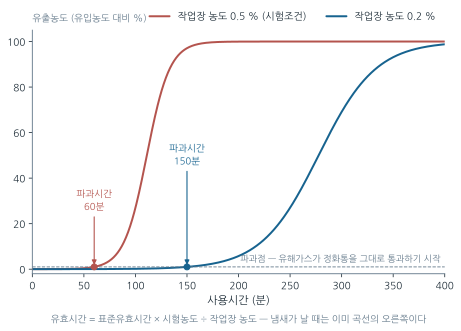
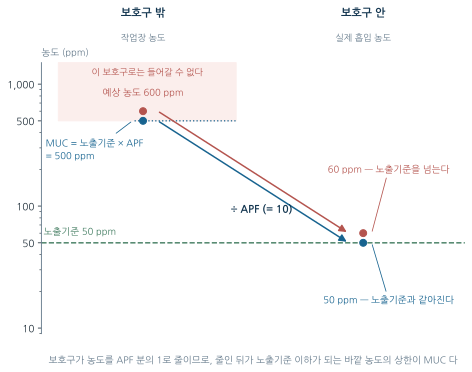
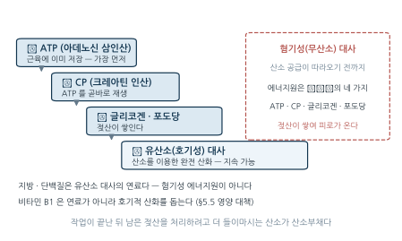
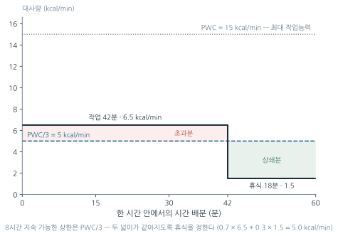
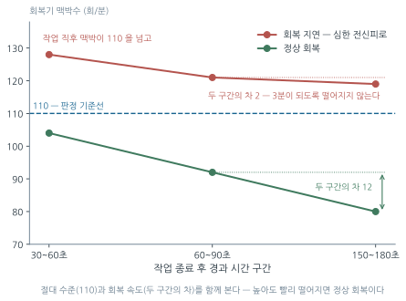

13주차. 개인보호구와 작업관리
관리 위계의 심화 적용, 호흡보호구와 보호계수(APF·MUC), 청력보호구(NRR)와 그 밖의 보호구, 보호구 프로그램의 운영, 작업생리(RMR·PWC)와 작업–휴식 배분, 산업피로의 판정과 대책
학습목표
이 주를 학습한 후 여러분은 다음을 할 수 있어야 합니다:
- 관리 위계의 각 단계를 실제 사례에 적용하고, 대치(물질·공정·시설의 변경)와 격리의 세부 분류를 구분할 수 있다
- 호흡보호구의 종류를 유해인자의 형태·산소농도·노출 수준에 따라 선정하고, 보호계수(PF)·할당보호계수(APF)·최대사용농도(MUC)를 계산할 수 있다
- 방독마스크 정화통의 파과(breakthrough) 개념을 설명하고 유효시간을 계산할 수 있으며, 보호구 성능이 밀착에 의존하는 이유를 설명할 수 있다
- 청력보호구의 종류·등급(EP-1/EP-2/EM)을 구분하고 실제 차음효과(NRR)를 계산하며, 보호구가 최후 수단인 이유를 설명할 수 있다
- 유해인자와 작업 조건에 따라 머리·눈·얼굴·손·발·추락 보호구를 선정하고, 보호구 프로그램(선정·적합성 평가·교육·유지관리)의 구성 요소를 설명할 수 있다
- 작업대사율(RMR)·실동률·계속작업 한계시간을 계산하고, PWC에 기반한 Hertig 식으로 작업–휴식 시간을 배분할 수 있다
- 국소피로의 지표(%MS)와 산업피로의 객관적 판정 방법(회복기 심박수, 근전도)을 설명하고, 피로 대책과 작업시간 관리의 원칙을 적용할 수 있다
1. 관리 위계의 심화 적용
1주차에서 관리 위계(제거→대체→공학적→관리적→개인보호구)의 큰 그림을 보았다. 이번 주는 이 위계를 실제 현장 판단의 도구로 다듬는다. 핵심 질문은 두 가지다 — 어떤 대책이 위계의 어느 단계에 속하는가(분류), 그리고 위계의 아래쪽 두 단(관리적 대책과 개인보호구)은 어떤 조건에서, 어떤 한계를 안고 쓰이는가(적용). 분류가 중요한 이유는 명명 문제가 아니라 대책의 분류가 곧 그 대책의 신뢰성 예측이기 때문이다.
1.1 대치(대체)의 세 가지 방법 — 물질·공정·시설의 변경
대치(substitution)는 대상에 따라 세 가지로 나눌 수 있다.
| 분류 | 정의 | 대표 예 |
|---|---|---|
| 물질의 변경 | 원료·용제·부재료를 유해성이 작은 물질로 교체 | 성냥 제조에서 황린 → 적린 |
| 공정의 변경 | 작업 방법·순서·기계의 동작 자체를 바꿈 | 금속을 두들겨 자르던 공정 → 톱으로 절단 |
| 시설(장비)의 변경 | 설비·용기·구조물을 안전한 것으로 교체 | 흄 배출용 드래프트의 창 → 안전유리창 |
이 분류에서 눈여겨볼 것은 목록에 없는 항목이다. “사람(작업자)의 변경”은 대치에 속하지 않는다. 대치는 어디까지나 환경 측을 바꾸는 개입이며, 건강한 사람을 골라 유해한 환경에 배치하는 것은 유해요인을 조금도 줄이지 못하기 때문이다. 1주차의 원칙 — 사람을 바꾸기 전에 환경을 바꾼다 — 이 분류 체계에도 그대로 반영되어 있다.
물질의 변경과 공정의 변경의 사례를 모아 보면 대치의 논리가 드러난다.
| 구분 | 원래 | 대치 후 | 줄어드는 것 |
|---|---|---|---|
| 물질 | 아조염료 원료 벤지딘 | 디클로로벤지딘 | 발암성 |
| 물질 | 성냥의 황린(백린) | 적린 | 독성 |
| 물질 | 탈지·세척용 TCE | 계면활성제 | 용제 증기 |
| 물질 | 샌드블라스팅 규사 | 강철 쇼트, 유리 비드 | 규폐증 위험 |
| 물질 | 입자가 작은 분체 원료 | 입자가 큰 것 | 호흡성 분획 |
| 물질 | 유기용제 페인트 | 수용성 페인트 | VOC 노출 |
| 공정 | 압축공기 스프레이 도장 | 담금(dipping)·전기흡착식 도장 | 미스트·증기 비산 |
| 공정 | 금속을 두들겨 자름 | 톱으로 절단 | 소음·충격 |
| 공정 | 고속회전 그라인더 납 연마 | 저속 oscillating sander | 납 분진 |
| 공정 | 리벳팅 작업 | 볼트·너트 작업 | 소음 |
| 공정 | 건조 후 점토 배합(도자기) | 건조 전 배합 | 분진(습윤 상태 배합) |
개별 사례의 암기보다 중요한 것은 어느 쪽이 덜 유해한가의 방향이다. 모든 사례는 같은 방향을 향한다 — 발암성 → 비발암성, 고독성 → 저독성, 작은 입자 → 큰 입자(작은 입자일수록 폐포까지 도달한다는 1주차의 원리), 휘발성 → 수용성. 방향을 뒤집으면(철구슬 → 모래, 큰 입자 → 작은 입자) 같은 “변경”이어도 개악이다.
물질의 변경과 공정의 변경을 가르는 기준은 “무엇이 달라졌는가”이다. 스프레이 도장 → 담금 도장은 페인트(물질)는 그대로 두고 발생 메커니즘(공정)을 바꾼 것이다.
대치가 항상 순이익인 것은 아니다. 톨루엔은 벤젠보다 발암성이 낮지만 여전히 신경독성이 있고, 물질 대치는 지금까지 알려지지 않았던 전혀 다른 장해를 줄 수 있다. 증기압·용해도 같은 물리화학적 특성이 달라져 새로운 노출 경로가 생길 수도 있으며, 공정 적합성과 경제성도 함께 평가해야 한다. 1,1,1-트리클로로에탄을 대체하려 도입한 일부 물질이 오존층 파괴라는 새로운 문제를 일으킨 것이 대표적 실패 사례다.
1.2 격리와 밀폐 — 두 가지 분류 체계
격리(isolation)는 유해인자 발생원과 근로자를 분리하여 노출을 막는 공학적 대책이고, 밀폐(enclosure)는 발생원 자체를 완전히 둘러싸 확산을 원천 차단하는 대책이다. 국제 문헌은 격리를 거리에 의한 격리 (원격 조종, 위험물 저장소의 원거리 배치), 장벽에 의한 격리(방음 조종실, 인터록 도어, 도장 부스), 시간에 의한 격리(도장·산세척을 야간·휴일에 수행하여 다른 근로자의 노출을 차단 — 관리적 대책과 중첩되는 영역)의 세 유형으로 나눈다. 한편 국내 문헌은 격리를 거리·시간·공정(시설)·작업자의 네 축으로 넓게 정의한다.
| 국내 분류 | 내용 | 예 |
|---|---|---|
| 거리의 격리 | 발생원과 근로자·다른 시설 사이에 물리적 거리 | 인화성 물질 저장탱크 사이에 도랑·제방 설치 |
| 시간의 격리 | 노출 대상이 없는 시간대로 작업 이동 | 야간 산세척 후 환기, 다음날 복귀 |
| 공정·시설의 격리 | 유해 공정을 방호벽·밀폐 구조로 둘러싸고 원격 조작 | 방사성 동위원소의 원격조정·자동화, 도금조·분쇄기의 밀폐, 소음원의 방음 상자 |
| 작업자의 격리 | 근로자 쪽을 분리·차폐 | 고열·소음 작업 근로자용 부스, 위생보호구 착용 |
국제 체계에서 밀폐는 격리와 구분되는 별도 범주지만(격리는 분리, 밀폐는 차단), 국내 체계에서는 “공정·시설의 격리”에 포함된다. 국내 체계에서 보호구 착용은 “작업자의 격리”로 분류된다 — 근로자 개인의 호흡기·피부를 유해환경에서 분리한다는 논리다. 그러나 위계상의 위치는 달라지지 않는다: 보호구는 어느 체계에서든 최후 수단이다.
반면 어느 체계로 보아도 격리가 아닌 것들이 있다. 국소배기장치 설치는 환기이고, 연마재를 모래 → 철구슬로 바꾸는 것은 대치(물질), 스프레이 → 담금 도장은 대치(공정)이다. 물질이 바뀌었으면 대치, 발생원과 사람 사이의 배치가 바뀌었으면 격리다.
격리·밀폐는 효과가 크지만 비용이 적게 드는 대책이 아니다. 방호벽·원격조작 설비·밀폐 구조물은 초기 투자가 크고, 밀폐 시스템은 유지보수를 위해 개방할 때 고농도 노출 위험이 있으므로 내부 음압 유지 (\(P_{내부} < P_{외부}\), 누출 방향이 항상 외부→내부)와 개방 시 안전작업절차가 함께 설계되어야 한다. 환기의 원리와 설계는 9주차·10주차에서 다루었다.
1.3 관리적 대책 — 작업시간 단축과 교육훈련
공학적 대책으로 노출을 충분히 낮추지 못할 때, 작업 방법·시간·절차를 바꾸어 노출을 줄이는 것이 관리적(행정적) 대책이다.
작업시간 단축의 원리는 단순하다. 하루 누적 노출량은 농도와 시간의 곱이므로,
\[ \text{일일 노출량} = \text{농도} \times \text{시간} \]
같은 농도라도 노출 시간을 반으로 줄이면 누적 노출량도 반이 된다. 고농도 작업을 짧게 수행하기, 여러 명이 번갈아 작업하는 교대근무, 작업–휴식 주기의 설정이 여기에 속한다.
① 고독성 물질에는 부적절하다 — 시간을 줄여도 순간 농도는 그대로이므로 단시간 고농도 노출의 급성 영향을 막지 못한다. ② 노출 인원이 늘어난다 — 1명의 작업을 2~3명이 번갈아 하면 개인당 노출량은 줄지만 노출되는 사람의 수는 늘어난다. ③ 근본 대책이 아니다 — 유해인자는 여전히 그 자리에 있다. ④ 피로가 누적될 수 있다 — 짧아도 강도 높은 작업의 반복은 피로를 쌓는다(§4~5의 주제).
교육훈련은 산업안전보건법이 유해물질 취급 근로자에 대해 의무화한 관리적 대책이다. 내용은 유해성 정보(MSDS), 노출 경로, 건강영향, 관리대책 사용법(환기장치·보호구), 응급조치를 포함한다. 단순 강의보다 보이지 않는 것을 보이게 만드는 시각화 기법 — 형광염료를 UV 램프로 비추어 장갑 착용 전후의 손 오염도를 보여 주기, 연기 발생기로 환기 기류와 후드 포집 범위 가시화, 강한 조명으로 작업복에서 털어지는 분진(2차 오염원) 보여 주기 — 이 효과적이다. 교육은 일회성으로는 불충분하며 정기 재교육·실습·공정 변경 시 추가 교육이 뒤따라야 한다.
1.4 개인보호구는 왜 최후 수단인가
개인보호구(PPE)는 발생원 통제가 불가능하거나 공학적 대책이 불충분할 때만 쓰는 최후 수단이다. 그 이유를 구조적으로 정리하면 다음과 같다.
| 한계 | 설명 |
|---|---|
| 착용자만 보호 | 주변 근로자는 여전히 노출된다 |
| 불완전한 보호 | 밀착 불량·파손 시 보호 성능이 사라진다 |
| 착용 의존성 | 근로자가 쓰지 않으면 효과가 없다 |
| 불편함 | 장시간 착용 시 피로, 의사소통 곤란 |
| 높은 유지비 | 정기 교체·점검·밀착 확인이 계속 필요하다 |
| 허위 안전감 | 보호구만 믿고 상위 대책을 미루게 만든다 |
핵심은 보호구가 유해인자를 제거하지 않는다는 점이다. 유해인자는 근로자의 코앞까지 와 있고, 보호구는 그 마지막 경계에서만 작동한다. 밀착 불량 상태로 방진마스크를 쓰고 석면 작업을 하다 폐암이 발생한 사례, 정화통 교체가 늦어 파과로 급성 중독이 발생한 사례, 차음이 지나친 귀마개 탓에 경보음을 듣지 못해 사고가 난 사례 — 모두 이 취약함을 보여 준다.
전체를 조망하면 하나의 규칙이 보인다: 위계를 내려갈수록(제거·대체 → 밀폐·격리·환기 → 작업시간 단축·교육 → 보호구) 초기비용은 줄지만 유지비용과 사람 의존도가 늘어난다. 보호구가 “싸다”는 것은 첫 달 이야기일 뿐이다.
보호구가 위계의 맨 아래에 있다는 것과, 보호구를 느슨하게 다뤄도 된다는 것은 전혀 다른 이야기다. KOSHA GUIDE G-12-2013은 두 명제를 나란히 놓는다.
- 작업환경이 설비개선 등의 방법으로 적절히 개선될 수 없어 근로자의 건강과 안전에 위험이 있을 때에는 언제나 개인보호구가 지급되고 사용되어야 한다. 보호구는 상위 대책의 대체물이 아니라, 상위 대책으로 메우지 못한 잔여 위험에 대한 대응이다
- 보호구는 다른 보호방법들을 고려한 이후의 마지막 선택이기 때문에, 근로자가 위험에 노출되어 있을 때는 항상 착용해야 한다 — 단 몇 분 동안의 작업 중이라도 예외는 결코 허용되지 않는다
두 번째 문장의 논리를 놓치기 쉽다. 마지막 방어선이기 때문에 그 뒤에는 아무것도 없고, 그래서 “잠깐만”이라는 예외가 곧 무방비를 뜻한다. 위계상의 순위가 낮다는 사실이 오히려 착용 규율을 엄격하게 만드는 근거다. 이 장의 나머지는 “그럼에도 보호구를 써야 할 때 어떻게 제대로 운영하는가”를 다룬다 — 성능의 문제(§2~3.3)와 운영의 문제(§3.4)로 나누어서.
2. 호흡보호구
그럼에도 보호구를 써야 하는 상황은 존재한다 — 상위 대책의 설치 기간, 비정형·단시간 작업, 유지보수를 위한 밀폐 개방, 비상 대응. 이때 보호구 선정은 감이 아니라 정량적 판단이어야 한다. 이 절은 그 도구를 다룬다.
2.1 호흡보호구의 종류와 선정 원리
| 종류 | 원리 | 적용 대상 | 한계 |
|---|---|---|---|
| 방진마스크 | 여과재로 입자 포집 | 분진, 흄, 미스트 | 가스·증기는 통과. 산소농도 18% 미만 장소 착용 금지 |
| 방독마스크 | 정화통의 화학적 흡착 | 가스, 증기 | 입자는 통과. 산소농도 18% 미만 장소 착용 금지 |
| 전동식 호흡보호구 | 고효율 여과재·정화통 + 전동 송풍 | 분진·가스·증기(장시간 작업) | 배터리·송풍기 관리 필요. 공기정화식의 한계는 동일 |
| 송기마스크 | 호스로 청정공기 공급 | 고독성 환경, 산소결핍 | 호스 길이·행동반경 제한 |
| 공기호흡기(SCBA) | 압축공기 탱크 휴대 | 긴급대피, 구조 | 사용시간 제한(30~60분) |
앞의 세 가지(방진·방독·전동식)는 작업장 공기를 정화해서 마시는 공기정화식이고, 뒤의 두 가지(송기·SCBA)는 작업장 공기와 무관하게 깨끗한 공기를 따로 공급받는 공기공급식이다. 이 구분이 선정의 출발점이다. 공기정화식은 여과층·여과재·흡수관으로 외기를 걸러 내는 구조이므로 산소를 만들어 내지 못한다. 반면 송기마스크는 흡수관이나 여과층이 필요 없는 대신 압축공기·산소 또는 산소발생장치를 반드시 갖추어야 한다 — 정화식과 공급식의 구조적 차이가 여기서 갈린다.
전동식 호흡보호구는 고효율 여과재나 정화통에 전동 송풍장치를 붙여 호흡저항을 낮춘 것으로, 전동식 방진마스크·전동식 방독마스크·전동식 후드 및 전동식 보안면으로 나뉜다. 후드·보안면형은 호흡기뿐 아니라 머리·안면부·목·어깨까지 함께 보호한다. 다만 공기를 불어 넣어 줄 뿐 정화 방식은 그대로이므로, 산소결핍 장소에서 쓸 수 없다는 제약은 일반 방진·방독마스크와 동일하다.
무엇: 안면부여과식 방진마스크, 정화통을 단 반면형 방독마스크, 전동식 호흡보호구(송풍장치와 벨트가 보이는 것), 송기마스크(공기공급 호스), 공기호흡기(SCBA, 등에 멘 실린더)를 같은 배경·같은 축척으로 나란히 찍거나 배치한 사진 한 장.
왜: 표 14.5 의 “정화식 대 공급식”이라는 구분은 문장보다 사진에서 즉시 이해된다 — 호스와 실린더가 붙어 있는지를 눈으로 확인하면 “공기정화식은 산소를 만들어 내지 못한다”는 §2.1의 핵심이 설명 없이도 전달된다. 정화통의 크기·표시색, 전동식의 송풍장치처럼 실물을 봐야 감이 잡히는 부분도 함께 해결된다.
출처 후보: NIOSH/CDC의 호흡보호구 자료(미국 연방정부 저작물로 대체로 퍼블릭 도메인), OSHA Respiratory Protection eTool, 한국산업안전보건공단(KOSHA) 보호구 안전인증 안내자료(출처 표기 조건 확인), 위키미디어 커먼즈의 CC BY/CC0 이미지. 제조사 카탈로그 사진은 상표가 드러나므로 교재용으로 피한다.
대안: 확보가 어려우면 다섯 종류의 공기 흐름 경로(작업장 공기 → 여과재/정화통 → 면체 / 외부 청정공기 → 호스 → 면체)를 같은 형식의 모식도 다섯 컷으로 그려 대체한다.
- 유해인자의 형태는? — 입자상이면 방진, 가스·증기면 방독. 여과재는 가스를 못 잡고, 정화통은 입자를 못 잡는다
- 산소농도는 18% 이상인가? — 미만이면 공기정화식은 무의미하다. 정화는 산소를 만들어 주지 않는다 → 송기마스크 또는 SCBA
- 농도 수준은? — 고농도일수록 높은 등급 또는 공기공급식(§2.4의 MUC로 판단)
- 작업 강도는? — 중작업일수록 호흡량이 많아 여유 있는 성능이 필요하다
- IDLH(Immediately Dangerous to Life or Health) 이상인가? — 생명에 즉각 위험한 농도에서는 공기정화식을 쓸 수 없다. SCBA만 허용된다
②와 ⑤가 특히 치명적이다 — 산소결핍 공간이나 IDLH 환경에서의 공기정화식 착용은 보호구 선정 실패의 최악의 형태다.
2.2 방진마스크 — 형식과 등급
방진마스크의 형식은 격리식, 직결식, 안면부여과식(면체여과식)으로 나뉜다. 격리식과 직결식을 가르는 것은 연결관의 유무다 — 면체와 여과재(방독마스크는 흡수관)가 연결관으로 이어져 있으면 격리식, 연결관 없이 면체에 곧바로 붙어 있으면 직결식이다. 두 형식 모두 여과재를 갈아 끼울 수 있으므로 묶어서 분리식이라 부르고, 안면부여과식은 마스크 본체 자체가 필터라 교체가 불가능하다. 등급은 입자 포집효율(NaCl 시험)에 따라 정해지는데, 특급에서는 형식에 따라 기준값이 다르다.
| 등급 | 분리식 | 안면부여과식 | 사용 장소 |
|---|---|---|---|
| 특급 | 99.95% 이상 | 99.0% 이상 | 베릴륨 등 독성이 강한 물질을 함유한 분진 발생장소, 석면 취급장소 |
| 1급 | 94.0% 이상 | 94.0% 이상 | 특급 착용장소를 제외한 분진 발생장소, 금속흄 등 열적으로 생기는 분진 발생장소, 기계적으로 생기는 분진 발생장소(규소 등 2급으로 무방한 경우 제외) |
| 2급 | 80.0% 이상 | 80.0% 이상 | 특급·1급 착용장소를 제외한 분진 발생장소 |
등급 구분의 논리는 “무엇이 얼마나 위험한가”에서 시작해 “어떻게 생긴 분진인가”로 이어진다. 독성이 강한 물질과 석면은 무조건 특급이고, 그 아래는 분진의 생성 기전으로 나뉜다 — 열적으로 생긴 분진(용융 금속이 증발했다가 응축한 금속흄)은 입자가 매우 작아 1급, 기계적으로 생긴 분진(연마·파쇄)은 상대적으로 크지만 규소처럼 2급으로 충분한 경우를 제외하면 역시 1급이다. 입자가 작을수록 폐 깊숙이 도달한다는 원리가 등급 체계에 그대로 반영되어 있는 셈이다.
포집효율 수치만 보면 안면부여과식 특급(99.0%)도 고위험 장소에 쓸 수 있을 것 같지만, 안전인증 기준은 별도의 금지 조항을 둔다: 배기밸브가 없는 안면부여과식 마스크는 특급 및 1급 장소에서 사용해서는 안 된다.
배기밸브가 없으면 내쉰 숨까지 여과재를 통과해야 하므로 여과재가 습기를 머금고 호흡저항이 커진다. 좋은 방진마스크의 요구 조건 가운데 하나인 “사용 중 흡기저항 상승률이 낮을 것”이 충족되지 않는 것이고, 저항이 커진 여과재는 공기를 안면부와 얼굴 사이의 틈으로 몰아 §2.5의 밀착 전제를 무너뜨린다. 포집효율 수치만으로는 보이지 않는 한계이므로, 보호구 선정에서 “등급이 높으면 된다”는 판단이 성립하지 않는 대표적인 사례다.
여과재의 재질은 면·합성섬유·유리섬유 등이다. 활성탄은 방진마스크의 여과재가 아니다 — 활성탄은 방독마스크 정화통의 흡수제이며, 입자를 거르는 것(여과)과 가스를 흡착하는 것(정화)은 원리가 다르다.
좋은 방진마스크의 요구 조건은 한 방향을 가리킨다: 잘 잡되(포집효율 높게), 숨쉬기 쉽고(흡기·배기저항과 사용 중 흡기저항 상승률 모두 낮게), 잘 붙고(안면 밀착성 크게), 편해야(시야 넓고 가벼워야) 한다. 저항이 크거나 쓸수록 급격히 막히는 마스크는 근로자가 벗어 버리게 만든다 — 착용 의존성이라는 근본 한계가 설계 조건에까지 반영되는 것이다.
2.3 방독마스크 — 정화통, 파과, 유효시간
방독마스크는 대상 가스별로 구분된 정화통(canister)을 장착해 유해가스를 화학적으로 흡착·중화한다.
- 흡수제: 활성탄(가장 많이 사용), 실리카겔, 소다라임
- 정화통 표시색: 유기화합물용 갈색, 암모니아용 녹색, 아황산용 노란색
방독마스크는 대상 가스의 종류별로 안전인증을 받으며, 종류마다 정해진 시험가스로 제독 능력을 검정한다.
| 종류 | 시험가스 |
|---|---|
| 유기화합물용 | 시클로헥산(C₆H₁₂) |
| 할로겐용 | 염소가스 또는 증기(Cl₂) |
| 황화수소용 | 황화수소가스(H₂S) |
| 시안화수소용 | 시안화수소가스(HCN) |
| 아황산용 | 아황산가스(SO₂) |
| 암모니아용 | 암모니아가스(NH₃) |
여기서 두 가지를 읽어야 한다. 첫째, 정화통은 만능이 아니다 — 암모니아용 정화통은 유기용제 증기를 막지 못한다. 정화통 선정은 “방독마스크를 쓴다”가 아니라 “어느 가스용 정화통을 쓴다”까지 결정하는 일이며, 표시색은 그 결정을 현장에서 확인하는 수단이다. 둘째, 표의 시험가스는 해당 종류를 대표하는 검정용 물질이지 작업장에서 만날 가스 그 자체가 아니다. 유기화합물용 정화통이 시클로헥산으로 검정된다고 해서 모든 유기용제에 같은 유효시간을 보장하는 것은 아니므로, 실제 사용시간은 사용설명서나 제조업체를 통해 확인해야 한다(§3.4).
정화통의 흡착 능력은 유한하다. 흡수제가 포화되면 유해가스가 정화통을 그대로 통과하기 시작하는데, 이를 파과(breakthrough)라 한다. 파과가 일어난 정화통은 겉보기에 멀쩡해도 보호 기능이 없다.
방독마스크의 사용 가능 여부를 가장 정확하게 확인할 수 있는 것은 파과곡선(농도–사용시간에 따른 파과 특성 그래프)이다. 냄새나 자극의 유무로 판단해서는 안 된다 — 착용 중 가스 냄새가 난다는 것은 이미 파과가 진행되었다는 뜻이므로, 그 시점에는 즉시 새 정화통으로 교체해야 한다. 안전인증 방독마스크에 파과곡선도, 사용시간 기록카드, 사용상의 주의사항을 표시하도록 하는 이유가 여기에 있다. 유효시간이 불분명하거나 산소결핍 위험이 있으면 송기마스크나 자급식 호흡기로 넘어가야 하고, 개봉한 정화통의 재사용은 피한다.
보관도 성능의 일부다. 방진마스크의 분진포집효율과 방독마스크의 제독능력은 사용시간뿐 아니라 보관방법에 따라서도 달라진다. 정화통을 개봉한 채 작업장에 걸어 두면 착용하지 않는 시간에도 흡착이 진행되어 유효시간이 줄어든다. 성능은 착용하는 순간에만 소모되는 것이 아니다.

그림 14.1 은 파과가 “어느 순간 갑자기” 일어나는 사건이 아니라 곡선임을 보여 준다. 사용 초기에는 유출이 거의 없다가 흡수제가 포화에 가까워지면서 유출농도가 가파르게 올라가고, 일단 곡선이 서기 시작하면 정화통은 사실상 아무 일도 하지 않는다. 파과시간은 그 상승이 시작되는 지점이며, 냄새가 느껴지는 시점은 이미 곡선의 오른쪽 — 그래서 교체 판단은 감각이 아니라 곡선과 사용시간 기록으로 해야 한다.
정화통의 능력은 “시험농도 \(C_s\)에서 \(t_s\)분 사용 가능”의 형태로 주어진다. 흡착 용량이 일정하다고 보면, 작업장 농도 \(C_w\)에서의 유효시간은 농도에 반비례한다.
\[ \text{유효시간} = \frac{\text{표준유효시간}(t_s) \times \text{시험농도}(C_s)}{\text{작업장 농도}(C_w)} \]
사염화탄소 0.5%에서 60분 사용 가능한 정화통을 사염화탄소 농도가 0.2%인 작업장에서 사용하면 유효시간은 얼마인가?
정답: 150분
\[ \text{유효시간} = \frac{60 \times 0.5}{0.2} = 150 \ \text{분} \]
작업장 농도가 시험농도보다 낮으므로 유효시간은 표준보다 길어진다 — 같은 흡착 용량을 더 묽은 가스가 천천히 소모하는 것이다. 표준유효시간과 시험농도는 분자, 작업장 농도는 분모다.
2.4 보호계수 — PF, APF, MUC
보호구의 성능은 “좋다/나쁘다”가 아니라 숫자로 다룬다. 세 개념이 사슬처럼 이어진다.
① 보호계수(Protection Factor, PF) — 보호구 밖 농도 \(C_0\)와 안 농도 \(C_1\)의 비, \(PF = C_0 / C_1\). 값이 클수록 보호 성능이 좋다. PF가 25라면 보호구 안 농도가 바깥의 1/25이라는 뜻이다.
② 할당보호계수(Assigned Protection Factor, APF) — 적절히 밀착이 이루어진 보호구를 훈련된 일련의 착용자들이 실제 작업장에서 착용했을 때 기대되는 최소 보호 정도치다. APF 100인 보호구는 외부 유해물질로부터 적어도 100배의 보호를 기대할 수 있다.
③ 최대사용농도(Maximum Use Concentration, MUC) — 그 보호구를 쓰고 들어갈 수 있는 작업장 농도의 상한:
\[ MUC = TLV \times APF \]
역으로 작업장의 예상 농도가 주어지면 필요한 보호구의 최소 성능 \(\text{요구 최소 } APF = \text{예상 농도} / \text{노출기준}\) 을 구할 수 있다.

그림 14.2 을 농도 축 위에서 읽으면 세 개념이 하나의 그림이 된다. 보호구는 작업장 농도를 APF분의 1로 끌어내리는 장치이고(화살표), 그 결과가 노출기준선 아래로 내려와야 한다. 바깥 농도가 정확히 \(TLV \times APF\)일 때 안쪽 농도가 노출기준과 같아지므로, 이 값이 곧 그 보호구로 들어갈 수 있는 상한 — MUC다. 그림에서 예상 농도 600 ppm은 MUC(500 ppm) 위에 놓이므로, APF 10인 보호구로는 이 작업장에 들어갈 수 없다.
PF·APF를 “보호구 밖과 안의 유량 비(\(Q_o/Q_i\))”로 이해하면 안 된다. 보호구를 통과하는 공기의 양이 아니라, 그 공기에 실려 오는 유해물질 농도가 몇 분의 일로 줄었는가가 보호의 본질이기 때문이다. 정의식의 분자·분모는 모두 농도(\(C_0\), \(C_1\))다.
또 하나의 개념적 경계: APF·MUC의 논리는 공기정화식 보호구가 작동하는 범위 안에서만 성립한다. IDLH 이상의 농도에서는 MUC를 계산할 것 없이 공기정화식 자체가 배제되고 SCBA만 허용된다(§2.1).
보호구 밖의 농도가 300 ppm, 보호구 안의 농도가 12 ppm일 때 보호계수는?
APF 25인 반면형 보호구를 구리흄(노출기준 0.1 mg/m³) 작업장에서 사용할 때 최대사용농도(MUC)는?
예상되는 공기 중 농도가 30 ppm이고 노출기준이 2 ppm인 작업에는 APF가 최소 얼마인 보호구가 필요한가?
(1) \(PF = 300/12 = 25\)
(2) \(MUC = 0.1 \times 25 = 2.5 \ \text{mg/m}^3\) — 작업장 농도가 이 값을 넘으면 이 보호구로는 들어갈 수 없다.
(3) \(APF \geq 30/2 = 15\) — APF 15 이상인 보호구를 선택해야 한다.
세 계산은 하나의 논리다 — 보호구는 농도를 APF분의 1로 줄여 주므로, “줄인 뒤의 농도가 노출기준 이하”가 되도록 선정한다.
2.5 밀착 — 모든 계산의 전제
§2.4의 모든 수치는 하나의 전제 위에 서 있다: 보호구가 얼굴에 제대로 밀착되어 있다는 것. APF의 정의 자체가 “적절히 밀착이 이루어진” 상태를 전제한다. 안면부와 얼굴 사이에 틈이 있으면 공기는 저항이 큰 여과재가 아니라 저항이 없는 틈으로 흐르고, 등급이 특급이든 정화통이 새것이든 보호 성능은 계산값에 한참 못 미친다. 수염, 안경 다리, 얼굴형에 맞지 않는 크기가 대표적인 밀착 불량의 원인이다. 그래서 보호구 지급은 지급으로 끝나지 않는다 — 착용자별 밀착도 검사(fit test)로 실제 밀착을 확인하고 정기 교체·관리가 뒤따라야 한다. 밀착도 검사 없이 지급된 보호구는 §1.4에서 말한 “허위 안전감”의 전형이다.
무엇: 정성적 밀착도 검사(후드를 씌우고 사카린·비터렉스 용액을 분무하는 장면) 또는 정량적 검사(면체에 프로브를 연결해 입자 계수기로 안팎 농도를 동시에 재는 장면) 사진. 검사자와 착용자, 장비가 함께 보이는 구도가 좋다. 가능하면 밀착 불량의 원인(수염, 안경 다리)을 보여 주는 대비 사진을 함께 싣는다.
왜: APF의 정의가 “적절히 밀착이 이루어진” 상태를 전제한다는 §2.5의 논지는 검사 장면 없이는 추상적으로 남는다. 사진 한 장이 “보호구는 지급으로 끝나지 않는다”를 절차로 보여 준다 — 실제로 사람마다 얼굴이 다르고, 그래서 착용자별 확인이 필요하다는 사실이 즉시 전달된다.
출처 후보: NIOSH/CDC 및 OSHA의 호흡보호 프로그램 자료(미국 연방정부 저작물, 대체로 퍼블릭 도메인), 한국산업안전보건공단 밀착도 검사 안내자료. 사업장에서 직접 촬영할 경우 피촬영자의 동의를 받고 얼굴 식별이 문제되면 측면·부분 구도로 촬영한다.
대안: 안면부와 얼굴 사이 틈으로 공기가 새는 경로를 화살표로 표시한 단면 모식도(여과재를 통과하는 흐름 대 틈으로 새는 흐름)로 대체한다.
3. 그 밖의 보호구와 보호구 프로그램
3.1 청력보호구와 NRR
소음의 공학적 저감(저소음 공정, 방음·흡음, 격리)이 우선이지만, 그것으로 부족한 구간에서는 청력보호구를 쓴다.
| 종류 | 차음효과(NRR) | 장점 | 단점 |
|---|---|---|---|
| 귀마개 | 15~30 dB | 저렴, 휴대 간편 | 올바른 삽입 기술 필요, 위생 관리 |
| 귀덮개 | 20~35 dB | 착탈 용이, 위생적 | 무겁고 불편, 안경과 간섭 |
안전인증 기준은 청력보호구를 세 가지로 구분한다. 귀마개는 차음 대역에 따라 두 등급으로 나뉜다.
| 종류 | 등급 | 기호 | 성능 |
|---|---|---|---|
| 귀마개 | 1종 | EP-1 | 저음부터 고음까지 모두 차음하는 것 |
| 귀마개 | 2종 | EP-2 | 주로 고음을 차음하고 저음(회화음 영역)은 차음하지 않는 것 |
| 귀덮개 | — | EM | — |
EP-2가 존재하는 이유를 짚어 두자. 차음은 많을수록 좋은 것이 아니다. 저음 대역에는 사람의 회화음이 실려 있으므로, 이를 함께 막아 버리면 대화·경보음·기계의 이상음이 들리지 않아 새로운 위험이 생긴다(§1.4에서 본 사례가 이것이다). 소음이 주로 고주파 성분이고 의사소통이 필요한 작업이라면 EP-2를, 저주파까지 강한 소음이라면 EP-1을 선정한다. 보호구 선정이 “성능이 높은 것 고르기”가 아니라 작업 조건과의 맞춤이라는 원칙이 청력보호구에서 가장 선명하게 드러나는 지점이다.
귀마개는 재사용 여부가 제품의 제조특성으로 표시되므로, 일회용 귀마개를 여러 날 반복 사용하는 관행은 제품 사양에 어긋난다. 표시를 확인하는 것이 위생 관리의 출발점이다.
NRR(Noise Reduction Rating)은 제조사가 표시하는 차음 성능이지만, C 특성으로 잰 실험실 조건의 값이다. 그래서 dB(A) 측정값에 적용할 때는 먼저 7 dB을 빼고(A·C 특성 차이), 현장에서는 삽입 깊이·밀착 상태·착용 시간이 이상적이지 않으므로 OSHA 방식대로 그 절반만 기대한다.
\[ \text{실제 감소량} = (NRR - 7) \times 0.5 \ \text{dB} \]
\(NRR/2\)만 쓰거나 \(NRR - 7\)만 쓰는 것은 두 보정 중 하나를 빠뜨린 것이다.
작업장 소음이 95 dB(A)이고, NRR 30 dB인 귀마개를 착용한다. 근로자의 실제 노출 수준은 대략 얼마로 평가해야 하는가?
정답: 약 83.5 dB(A)
\[ \text{실제 감소량} = (30 - 7) \times 0.5 = 11.5 \ \text{dB}, \qquad \text{노출 수준} = 95 - 11.5 = 83.5 \ \text{dB(A)} \]
노출기준 90 dB(A)(6주차 참조)보다 낮아지므로 당장의 기준은 만족한다. 그러나 이 계산이 “이제 됐다”를 뜻하지는 않는다 — 보호구의 효과는 매일의 올바른 착용에 의존하며, 소음 자체를 줄이는 공학적 대책이 여전히 우선이다. 반대로 차음이 지나치면 경보음·대화가 안 들리는 새로운 위험이 생긴다는 점도 기억하자.
3.2 피부 보호 — 장갑, 보호복, 그리고 2차 오염
피부 흡수·접촉이 문제되는 물질(유기용제, 생식독성 물질 등)에는 보호장갑과 보호복이 쓰인다. 원리는 호흡보호구와 같다 — 보호구는 올바로 쓰였을 때만 경계가 된다. §1.3의 형광염료 실험이 보여 주듯 장갑 착용 전후의 손 오염도 차이는 극적이지만, 오염된 장갑을 낀 손으로 얼굴을 만지면 경계는 뚫린다. 작업복은 그 자체가 2차 오염원이 될 수 있다 — 쌓인 분진은 움직일 때마다 다시 날리고, 오염된 작업복을 집으로 가져가면 노출이 작업장 밖으로 확장된다. 오염 작업복의 분리·세탁 관리가 보호구 관리의 일부인 이유다.
안전인증 대상 보호장갑은 용도에 따라 내전압용 절연장갑(감전 방지)과 유기화합물용 안전장갑(유기화합물의 경피 흡수 방지)으로 나뉜다. 보호복은 크게 방열복(방열상의·방열하의·방열일체복·방열장갑·방열두건)과 유기화합물용 보호복으로 구분되며, 후자는 보호 범위(전신/부분)와 노출 형태(분사에 대비하는 액체방호형 3형식, 분무에 대비하는 분무방호형 4형식)의 조합으로 형식이 정해진다. 화학물질이 튀는 형태인지 안개처럼 흩어지는 형태인지가 형식 선정의 기준이라는 뜻이다. 관리대상·허가대상 유해물질 중 피부 자극성·부식성 물질을 다루는 작업에는 불침투성 보호복·안전장갑·안전장화와 피부보호용 약품이 함께 요구된다.
호흡용보호구·보호복·안전장갑·안전화의 안전인증은 일부 화학물질에 대해서만 보호성능을 시험한다. 인증을 받은 제품이라 해서 모든 화학물질을 막아 주는 것이 아니며, 보호복은 분진에 대해서는 안전인증 자체가 이루어지지 않는다.
따라서 화학물질용 보호구는 취급 물질별로 보호성능이 있는지를 제품 사용설명서와 제조업체를 통해 확인한 뒤 선정하고, 확인된 사용방법에 따라 써야 한다. “안전인증 필증이 붙어 있다”는 사실은 그 물질에 대한 보호를 보증하지 않는다. §2.3에서 정화통을 가스 종류별로 골라야 했던 것과 같은 논리가 장갑·보호복에도 그대로 적용되는 것이다.
3.3 그 밖의 보호구 — 머리·눈·얼굴·발·추락
호흡·청력·피부 보호구 외에도, 작업의 위험 유형에 따라 여러 보호구가 요구된다. 총론 수준에서 중요한 것은 종류의 암기가 아니라 “어떤 위험이 어떤 보호구를 부른다”는 대응 논리다.
| 위험(작업 조건) | 보호구 | 보호 부위 | 종류·등급 구분의 축 |
|---|---|---|---|
| 물체의 낙하·비래 또는 추락 위험 | 안전모 | 머리 | 추락 방지 포함 여부와 내전압성: AB(낙하·비래·추락), AE(낙하·비래 + 감전), ABE(셋 모두) |
| 높이·깊이 2 m 이상 추락 위험 장소 | 안전대 | 몸 | 벨트식(1개 걸이용, U자 걸이용) / 안전그네식(추락방지대, 안전블록) |
| 낙하·충격·끼임, 감전 또는 정전기 대전 | 안전화 | 발 | 가죽제·고무제(내수·내화학)·정전기·발등·절연화·절연장화 |
| 물체가 흩날릴 위험, 유해물질 비산 | 보안경 | 눈 | 발생 광선: 자외선용·적외선용·복합용·용접용 |
| 용접 시 불꽃·물체가 흩날릴 위험 | 보안면 | 눈·얼굴 | 눈만이 아니라 얼굴까지 덮는다는 점이 보안경과의 차이 |
| 감전 위험 작업 | 절연용 보호구 | 머리·손 | 안전모 AE·ABE, 내전압용 절연장갑 |
| 고열물체 취급·매우 더운 장소 | 방열복·방열장갑 | 몸·손 | 착용 부위별: 상의·하의·일체복·장갑·두건 |
| 저온물체 취급·현저히 추운 장소 | 방한모·방한복·방한화·방한장갑 | 몸 전체 | — |
안전모 기호는 성능의 누적을 나타낸다. A는 낙하·비래에 대한 기본 성능, B는 추락에 대한 성능, E는 내전압성(7,000 V 이하의 전압에 견디는 성능)이다. 따라서 AB는 추락 위험이 있는 고소작업, AE는 추락 위험은 없되 감전 위험이 있는 전기작업, ABE는 두 위험이 겹치는 작업에 쓴다.
선정 논리는 단순하다 — 작업에 존재하는 위험을 모두 나열하고, 그 전부를 덮는 최소 사양을 고른다. 위험이 하나라도 빠지면 보호구는 그 지점에서 뚫리고, 필요 없는 성능까지 올리면 무겁고 불편해져 착용률이 떨어진다(§1.4의 착용 의존성).
3.4 보호구 프로그램의 운영
여기까지가 보호구의 성능에 관한 이야기였다면, 지금부터는 운영의 문제다. 성능이 아무리 좋아도 잘못 고르고, 안 맞게 지급하고, 쓰는 법을 알려 주지 않고, 관리하지 않으면 그 성능은 현장에 도달하지 않는다. 관리 위계상 보호구가 최후 수단이라는 사실이 오히려 이 운영을 엄격하게 만든다 — 뒤에 다른 방어선이 없기 때문이다.
선정: 적절성의 평가
어떤 보호구를 선택할지는 작업장 내의 여러 유해·위험요소를 주의 깊게 고려하여 정해야 한다. 적절성 평가에서 확인할 사항은 다섯 가지다.
| 확인 사항 | 내용 |
|---|---|
| 위험에 대한 적합성 | 예방하려는 위험과 노출 장소의 조건에 맞아야 한다. 농약 방호용으로 고안된 보안경은 연마기로 철·돌을 절단하는 작업의 보안경으로 적합하지 않다 |
| 조절 가능성 | 착용자의 몸에 맞도록 조절될 수 있어야 한다 |
| 착용자의 이해 | 착용에 필요한 시간, 작업에 요구되는 물리적 노력, 시인성과 정보교환(대화·경보 인지)에 대한 필요사항을 착용자가 알고 있어야 한다 |
| 건강상태 확인 | 착용 근로자의 건강상태가 검사되어야 한다 |
| 보호구 간의 조화 | 둘 이상을 함께 착용한다면 서로 조화를 이루어야 한다. 특수한 형태의 호흡보호구가 보안경 착용을 방해해서는 안 된다 |
첫 항목과 마지막 항목이 특히 실무적이다. 위험에 대한 적합성은 “보안경을 지급했다”가 아니라 “이 위험에 맞는 보안경인가”를 묻는다. 보호구 간의 조화는 보호구를 하나씩 따로 고르면 놓치는 문제다 — 방독마스크 때문에 보안경이 들뜨면 두 보호구가 서로의 성능을 깎는다. 보호구는 묶음으로 선정해야 한다.
또한 착용자의 이해 항목에 시인성과 정보교환이 들어 있다는 점을 눈여겨보자. 보호구가 만들어 내는 2차 위험 — 시야 제한, 대화·경보 인지의 곤란(§3.1의 EP-2) — 을 선정 단계에서 미리 다루라는 요구다.
지급과 교육훈련
보호구는 지급으로 끝나지 않는다. 정확한 사용을 위해 근로자에게 왜 필요한지, 언제 사용하고 언제 대체(교체)해야 하는지, 그 한계는 무엇인지를 알려 주어야 하고, 올바른 사용법을 훈련·교육하여 근로자가 확실히 사용할 수 있게 해야 한다. §1.3에서 본 교육훈련의 원칙이 보호구에 그대로 적용되는 것이며, 특히 “한계를 알려 준다”는 항목은 §1.4의 허위 안전감을 예방하는 직접적 수단이다.
교육으로 끝도 아니다. 개인보호구가 실제로 사용되고 있는지를 정기적으로 검사하고, 사용하지 않는 경우 그 이유를 완벽하게 조사해야 한다. 착용률이 낮으면 근로자를 탓하기 전에 원인을 찾으라는 뜻이다 — 호흡저항이 큰가, 크기가 맞지 않는가, 다른 보호구와 간섭하는가, 작업 동작을 방해하는가. 원인의 상당 부분은 선정 단계로 되돌아간다. 안전보건표지는 착용을 돕는 보조 수단이다.
유지·관리와 보관
| 관리 항목 | 요구 사항 |
|---|---|
| 보관 | 사용하지 않을 때는 이상 유무를 검사하고 오염되지 않도록 조치하여 적절히 보관한다. 건조하고 깨끗한 벽장에 두고, 눈 보호대처럼 작은 물품은 상자에 보관한다 |
| 청결·보수 | 항상 청결하고 보수가 잘 되어 있어야 한다 |
| 교체 주기 | 교환 시기와 유효기간 명시를 포함하여 제조자의 유지관리사항을 따른다 |
| 수리 주체 | 단순한 유지보수는 훈련받은 착용자 본인이 할 수 있으나, 복잡한 수리는 전문가만 수행한다 |
개인보호구 사용에 관한 사업장의 지침은 다음을 포함해야 한다.
- 사용하기 전 보호구 적절성을 확인하는 방법과 적절한 배분에 관한 사항
- 적절한 유지 관리 및 보관방법
- 안전하게 사용할 수 있는 방법에 대한 사용설명서 제공
- 올바르게 사용하는 방법
네 항목은 보호구의 수명 주기 — 고르고(①), 나눠 주고(①), 쓰고(③·④), 간수하고 갈아 주는(②) — 를 그대로 따라간다. 보호구 관리가 “구매와 지급”으로 끝나는 일이 아니라 주기를 도는 프로그램이라는 것이 이 네 줄의 요지다. §2.5의 밀착도 검사, §2.3의 정화통 교체 관리, §3.2의 오염 작업복 분리·세탁도 모두 이 주기 안의 항목들이다.
4. 작업생리 — 에너지 대사와 작업–휴식 배분
관리적 대책 중 “작업시간의 조정”은 유해물질 노출에만 적용되는 것이 아니다. 작업 그 자체가 요구하는 에너지와 힘이 근로자의 능력을 넘어서면 피로가 축적되고, 능률 저하·재해·근골격계질환으로 이어진다. 작업생리(work physiology)는 “이 작업이 이 사람에게 얼마나 무거운가”를 정량적으로 다루는 분야로, 1주차의 원칙 — “작업을 인간에게 적합하게” — 를 수치로 구현한다. 이 절의 식들이 곧 “얼마나 일하고 얼마나 쉬게 할 것인가”라는 작업관리의 정량적 근거다.
4.1 근육 활동의 에너지원
근육이 수축을 시작하면 에너지는 여러 경로에서 순차적으로 공급된다. 가장 먼저 동원되는 것은 근육에 이미 저장되어 있는 아데노신 삼인산(ATP)이다.

산소 공급이 따라오기 전까지의 혐기성 대사에 동원되는 에너지원은 ATP, CP(크레아틴 인산), 글리코겐, 포도당의 네 가지다. 지방과 단백질은 산소를 이용한 유산소 대사에서 쓰이는 연료이므로 혐기성 에너지원이 아니다. 한편 비타민 B₁은 그 자체가 연료는 아니지만 호기적(유산소) 산화를 도와 근육의 열량 공급을 원활하게 하므로, 근육작업 근로자에게 공급하는 영양 대책에 포함된다(§8.1).
4.2 산소소비량과 산소부채
작업 강도가 올라가면 산소소비량도 늘어나지만, 이 관계는 무한히 비례하지 않는다. 산소소비량은 최대산소소비량에서 한계에 도달하며, 작업대사량이 그 한계를 넘으면 산소소비량은 더 증가하지 않고 부족분은 혐기성 대사로 메워진다. 이때 젖산의 제거 속도가 생성 속도에 못 미쳐 젖산이 축적되고 피로가 온다. 작업이 끝나도 맥박과 호흡수가 즉시 회복되지 않고 서서히 감소하는 것은 남은 젖산을 처리해야 하기 때문이다 — 이렇게 작업 종료 후 축적된 젖산을 제거하기 위해 추가로 동원되는 산소소비량을 산소부채(oxygen debt)라 한다. 작업 후 한동안 숨이 가쁜 것은 몸이 작업 중에 진 “빚”을 갚는 과정이며, 이 회복 과정의 속도가 곧 전신피로 판정의 지표가 된다(§5.1).
4.3 작업대사율(RMR)과 작업강도
정의
작업대사율(RMR, Relative Metabolic Rate)은 그 작업이 기초대사량의 몇 배에 해당하는 에너지를 추가로 요구하는지를 나타낸다.
\[ RMR = \frac{\text{작업 시 소요열량} - \text{안정 시 소요열량}}{\text{기초대사량}} \]
분자는 “작업 때문에 더 쓰는 열량”(작업 시 − 안정 시)이고, 분모는 기초대사량이다. 세 값 — 작업 시 열량, 안정 시 열량, 기초대사량 — 만 있으면 계산되며, 작업시간은 정의에 들어 있지 않다. RMR은 작업의 “단위 시간당 강도”이지 총량이 아니기 때문이다.
작업대사율이 3.0, 안정 시 소모열량이 800 kcal, 기초대사량이 600 kcal일 때 작업 시 소요열량은?
정답: 2,600 kcal
RMR 식을 작업 시 소요열량에 대해 풀면
\[ \text{작업 시 소요열량} = \text{안정 시 소요열량} + RMR \times \text{기초대사량} \]
\[ = 800 + 3.0 \times 600 = 2{,}600 \ \text{kcal} \]
개념 확인: 기초대사량과 안정 시 대사량은 서로 다른 값이다. 곱해지는 쪽은 기초대사량(600), 더해 주는 기준선은 안정 시 열량(800)이다. 두 값을 바꿔 넣으면 2,400 kcal라는 다른 답이 나온다.
작업 구분과 실동률
RMR로 작업의 무게를 구분한다. 강작업은 RMR 2~4, 중작업은 RMR 4~7이며, 중작업에는 수시로 휴식시간을 갖는 것이 적합하다. 중등도 작업 이하의 구분에서는 지적(정신) 활동의 비중도 함께 고려된다. ACGIH의 소모열량 기준으로는 시간당 350~500 kcal를 소모하는 작업이 심한 작업(heavy work)에 해당한다 — 고열 작업에서 작업강도별 WBGT 노출기준과 연결되는 구분이다(7주차).
실동률(%)은 정해진 근무시간 중 실제로 작업에 쓸 수 있는 시간의 비율로, RMR로부터 경험식으로 추정한다.
\[ \text{실동률}(\%) = 85 - 5 \times RMR \]
RMR = 3인 작업이라면 실동률은 \(85 - 15 = 70\%\) — 작업이 무거울수록 근무시간 중 더 많은 부분이 회복에 배정되어야 한다는 뜻이다.
계속작업의 한계시간
RMR 구간(강작업·중작업)은 작업을 분류하는 틀일 뿐, “얼마나 오래 계속할 수 있는가”는 별도의 관계식으로 구한다. 사이또(齋藤)·오시마(大島)의 식이다.
\[ \log(\text{계속작업 한계시간, 분}) = 3.724 - 3.25 \log(RMR) \]
RMR 4는 중작업 구간의 하한일 뿐, 그 값을 넘는 순간 계속작업이 불가능해지는 경계선이 아니다. 작업 구분(분류)과 한계시간(연속 지속 가능 시간)은 서로 다른 질문에 답하는 서로 다른 도구다. 한계시간은 위 식에 RMR을 넣어 계산해야 한다.
작업대사율이 7인 작업을 쉬지 않고 계속할 수 있는 한계시간은?
정답: 약 10분
\[ \log T = 3.724 - 3.25 \times \log 7 = 0.9775, \qquad T = 10^{0.9775} \approx 9.5 \ \text{분} \approx 10 \ \text{분} \]
RMR 7 — 중작업 구간의 상한 — 인 작업은 10분을 넘겨 연속으로 시킬 수 없다. 이 계산 결과가 곧 작업–휴식 주기 설계의 입력값이 된다.
4.4 육체적 작업능력(PWC)과 작업–휴식 배분
PWC와 8시간 작업의 상한
육체적 작업능력(PWC, Physical Work Capacity)은 그 사람이 발휘할 수 있는 최대 작업 능력 — 최대산소소비량에 대응하는 에너지 소비율 — 이다. 전력 질주를 하루 종일 할 수 없듯이, 8시간 노동의 강도는 최대 능력보다 훨씬 낮아야 한다. 근로자가 8시간 동안 피로를 느끼지 않고 일하기 위한 작업강도의 상한은 PWC의 1/3으로 본다.
\[ E_{8h} = \frac{PWC}{3} \]
PWC가 12 kcal/min인 근로자라면 8시간 지속 가능한 작업강도는 4 kcal/min까지다.
Hertig 식 — 시간당 휴식시간 배분
작업대사량이 \(PWC/3\)을 넘는 작업을 시켜야 한다면, 초과분을 휴식으로 상쇄해야 한다. Hertig의 식은 “작업과 휴식의 가중평균 대사량이 \(PWC/3\)이 되도록” 매 시간 중 휴식의 비율을 정한다.
\[ T_{rest}(\%) = \frac{PWC/3 - E_{task}}{E_{rest} - E_{task}} \times 100 \]
- \(E_{task}\): 작업 시 대사량 (kcal/min)
- \(E_{rest}\): 휴식 시 대사량 (kcal/min)
PWC가 15 kcal/min인 근로자가 1일 8시간 물체 운반 작업을 한다. 작업대사량 \(E_{task} = 6.5\) kcal/min, 휴식 시 대사량 \(E_{rest} = 1.5\) kcal/min일 때, 매 시간당 휴식시간과 작업시간을 배분하라. (Hertig 식 적용)
정답: 휴식 18분, 작업 42분
\[ T_{rest} = \frac{15/3 - 6.5}{1.5 - 6.5} = \frac{-1.5}{-5} = 0.3 \quad\Rightarrow\quad 18 \ \text{분 휴식}, \ 42 \ \text{분 작업} \]
계산 요령: 작업대사량이 허용 수준(\(PWC/3 = 5\))을 넘고 휴식 대사량이 그보다 낮으므로, 분자와 분모가 모두 음수로 나오는 것이 정상이다.
검산(개념 확인): \(0.7 \times 6.5 + 0.3 \times 1.5 = 5.0\) kcal/min — 배분 후의 가중평균 대사량이 정확히 \(PWC/3\)이 된다. 이것이 Hertig 식이 하는 일이다.

그림 14.4 은 Hertig 식이 무엇을 하는 계산인지를 넓이로 보여 준다. 작업대사량 6.5 kcal/min은 지속 가능한 상한(\(PWC/3 = 5\))을 1.5만큼 넘고, 휴식대사량 1.5는 그보다 3.5만큼 낮다. 한 시간을 42분과 18분으로 나누면 초과분(\(42 \times 1.5\))과 상쇄분(\(18 \times 3.5\))의 넓이가 같아지고, 평균 부하가 정확히 상한선 위로 되돌아온다. 휴식은 “쉬는 시간”이 아니라 초과한 만큼을 되갚는 시간이라는 것이 이 그림의 요지다.
최대 허용 계속작업시간 (\(T_{end}\))
작업대사량 \(E\)(kcal/min)로부터 쉬지 않고 계속 일할 수 있는 최대 허용시간을 구하는 관계식도 있다.
\[ \log T_{end} = 3.720 - 0.1949\,E \]
예를 들어 작업대사량이 7 kcal/min이면 \(\log T_{end} = 3.720 - 0.1949 \times 7 = 2.3557\), 즉 \(T_{end} \approx 227\)분이고, 8.75 kcal/min으로 올라가면 약 103분으로 줄어든다. 이 식에 들어가는 \(E\)는 작업대사량이다 — 식이 묻는 것은 “이 강도의 작업을 얼마나 지속할 수 있는가”이므로, 그 사람의 PWC나 휴식 시 대사량은 이 계산과 무관한 조건이다.
4.5 국소피로와 작업강도(%MS)
전신이 아니라 특정 근육군에만 부하가 걸리는 경우가 국소피로다. 정량 지표는 작업강도 %MS — 작업이 요구하는 힘이 그 사람의 최대 힘의 몇 %인지다.
\[ \%MS = \frac{RF}{MS} \times 100 \]
- \(MS\) (maximum strength): 근로자가 가진 최대의 힘
- \(RF\) (required force): 작업이 요구하는 힘
- 약한 쪽을 기준으로 한다. 양손의 힘이 다르면 \(MS\)는 작은 값을 쓴다. 보호는 언제나 취약한 쪽을 기준으로 설계한다 — 강한 손이 버틸 수 있어도 약한 손이 먼저 피로해지기 때문이다
- 양손으로 들면 한 손의 부담은 무게의 1/2이다. 무게 \(W\)인 물체를 두 손으로 들 때 한 손의 \(RF = W/2\)
단위 kp(kilopond)는 질량 1 kg을 중력이 당기는 힘이므로, 무게 kg 값과 그대로 나누어 쓸 수 있다.
약한 쪽 손의 힘이 평균 45 kp인 근로자가 무게 10 kg인 상자를 두 손으로 들어 올릴 때 한 손의 작업강도(%MS)는?
왼손잡이 근로자의 오른손 평균 힘이 40 kp, 왼손이 50 kp이다. 무게 4 kg인 상자를 두 손으로 들 때 작업강도(%MS)는?
(1) 11.1% — \(RF = 10/2 = 5\) kp, \(\%MS = (5/45) \times 100 = 11.1\%\)
(2) 5% — 기준은 약한 쪽인 오른손(40 kp), 두 손으로 드니 한 손 부담은 2 kg. \(\%MS = (2/40) \times 100 = 5\%\)
작업강도가 정해지면 국소피로가 오지 않는 적정 작업시간을 구할 수 있다.
\[ \text{적정 작업시간(초)} = 671{,}120 \times \%MS^{-2.222} \]
- 작업강도가 10% 미만이면 국소피로는 오지 않는다고 본다
- 지수가 음수이므로 적정 작업시간은 작업강도에 반비례한다 (비례가 아니다). %MS가 10%일 때 약 4,025초, 20%일 때 약 863초 — 작업강도가 2배가 되면 적정 작업시간은 1/4 이하로 줄어든다. 무거운 작업을 “조금만 더” 시키는 것이 왜 위험한지를 이 비선형성이 설명한다
5. 전신피로의 판정 — 회복기 심박수 · 국소피로의 판정 — 근전도(EMG)
5.1 전신피로의 판정 — 회복기 심박수
피로는 주관적 호소만으로 판단할 수 없으므로 객관적 지표가 필요하다. 전신피로의 지표는 §4.2에서 본 산소부채의 논리를 그대로 쓴다 — 회복이 얼마나 빠른가를 심박수로 본다.
작업 종료 직후 30~60초, 60~90초, 150~180초 구간의 평균 맥박수를 각각 \(HR_{30\text{-}60}\), \(HR_{60\text{-}90}\), \(HR_{150\text{-}180}\)이라 할 때:
\[ HR_{30\text{-}60} > 110 \quad \text{이고} \quad \left(HR_{150\text{-}180} - HR_{60\text{-}90}\right) < 10 \]
즉 ① 작업 직후 맥박이 110을 넘고, ② 3분이 다 되도록 맥박이 떨어지지 않는(두 구간의 차가 10 미만) 경우를 심한 전신피로 상태로 판단한다. 기준의 두 축 — 절대 수준(110)과 회복 속도(차이 10) — 을 함께 보아야 한다. 맥박이 높아도 빠르게 떨어지면 정상 회복이고, 높은 채로 떨어지지 않는 것이 문제다.

그림 14.5 의 두 곡선은 작업 직후의 높이가 아니라 기울기에서 갈린다. 아래쪽 곡선은 출발점부터 110 미만이고 3분에 걸쳐 계속 떨어지지만, 위쪽 곡선은 110을 넘긴 채 두 번째와 세 번째 구간이 거의 같은 높이에 머문다 — 산소부채가 좀처럼 갚아지지 않는 상태이며, 이것이 심한 전신피로의 판정 근거다.
전신피로의 생리학적 원인은 §4의 에너지 대사에서 자연스럽게 따라 나온다: 산소 공급의 부족, 작업강도의 증가, 혈중 포도당 농도의 저하, 근육 내 글리코겐량의 감소다. 글리코겐은 연료이므로 작업이 강할수록 소모되어 감소하고(증가가 아니다), 작업강도가 높을수록 혈중 포도당 농도는 급속히 떨어져 피로감이 빨리 온다. 근육 내 글리코겐 농도의 변화 양상은 작업자의 훈련 유무에 따라 차이를 보인다.
5.2 국소피로의 판정 — 근전도(EMG)
국소피로의 객관적 평가에는 근전도(EMG, electromyogram)가 많이 사용된다. 피로한 근육은 정상 근육과 뚜렷이 다른 전기적 신호를 낸다.
| 지표 | 피로한 근육에서의 변화 |
|---|---|
| 총전압 | 증가 |
| 평균 주파수 | 감소 |
| 저주파수(0~40 Hz) 영역의 힘 | 증가 |
| 고주파수(40~200 Hz) 영역의 힘 | 감소 |
네 지표는 하나의 그림으로 요약된다: 피로한 근육은 같은 힘을 내기 위해 더 큰 신호를 더 느리게(저주파로) 낸다 — 전압은 올라가고 주파수는 내려간다.
6. 피로의 검사방법과 증상
피로의 검사방법 중 CMI(Cornell Medical Index)는 피로 자각증상을 조사하는 주관적 방법이고, 생리적 기능검사·생화학적 검사·생리심리적 검사는 객관적 방법이다. 피로의 증상으로는 맛·냄새·시각·촉각 등 지각기능의 둔화, 혈중 이산화탄소량 증가로 인한 얕고 빠른 호흡(심하면 호흡곤란), 그리고 혈당치 저하와 젖산·탄산량 증가에 따른 산혈증이 나타난다.
축적되는 피로물질은 젖산, 크레아틴, 초성포도당 등이다. 글리코겐은 피로물질이 아니라 에너지원이다 — 피로할 때 글리코겐은 쌓이는 것이 아니라 고갈된다(§5.1). 한편 피로의 배경이 되는 스트레스는 혈압 상승, 근육의 긴장, 위산 분비 증가, 아드레날린 분비 증가 같은 신체반응을 일으킨다.
7. 곤비와 지적속도 · 산업피로의 대책
7.1 곤비와 지적속도
피로에도 단계가 있다. 하룻밤 자면 풀리는 보통피로와 달리, 심한 노동 후의 피로 현상으로 단기간의 휴식으로는 회복될 수 없는 병적 상태 (발병 단계의 피로)를 곤비라 한다. 전신피로·국소피로가 피로의 “부위”에 따른 구분이라면, 곤비는 피로의 “깊이”가 회복 가능 범위를 벗어난 상태다. 작업관리의 목표는 피로가 곤비에 이르기 전에 회복의 기회를 설계하는 것이다.
지적속도(至適速度)는 산업피로를 가장 적게 하면서 생산량을 최고로 올릴 수 있는 경제적인 작업속도다. 가장 빠른 속도가 아니라 피로와 생산성의 균형점이라는 데 뜻이 있다 — 속도를 올릴수록 단기 생산량은 늘지만 피로 누적으로 능률과 안전이 무너지므로, 최적점은 최대점보다 낮은 곳에 있다.
7.2 산업피로의 대책
| 구분 | 대책 |
|---|---|
| 휴식 | 작업 과정에 적절한 휴식시간을 삽입한다. 피로한 뒤 한 번에 장시간 쉬는 것보다 여러 번으로 나누어 휴식하는 것이 효과적이다 |
| 동작·자세 | 불필요한 동작을 피해 에너지 소모를 줄인다. 정적인 자세를 유지하는 작업은 동적인 작업으로 전환한다. 물체와 눈의 거리, 신체 부위의 위치·높이 등 작업 자세를 적정하게 유지한다 |
| 작업량 | 작업능력에는 개인차가 있으므로 개인별로 작업량을 조정하고, 일·월간 작업량을 적정화한다 |
| 영양·환경 | 커피·홍차·엽차와 비타민 B₁을 공급한다(§4.1). 충분한 수면을 취한다. 작업환경을 정리·정돈하고, 작업 전·후 간단한 체조를 실시한다 |
두 가지 원리를 짚어 두자. 첫째, 정적 작업이 동적 작업보다 피로를 키운다. 직관과 달리 정적 자세는 같은 근육을 지속적으로 수축시켜 혈류를 압박하고 국소피로를 빠르게 누적시키므로, 대책의 방향은 언제나 정적 → 동적이다(12주차의 정적 부하 논의와 이어진다). 둘째, 휴식의 형태는 작업의 성격에 따라 다르다 — 머리를 쓴 뒤에는 몸을 움직이고, 몸을 쓴 뒤에는 쉬게 한다. 정신신경 작업 후에는 몸을 가볍게 움직이는 휴식이 좋지만, 전신 근육을 쓰는 작업 후의 휴식 중에까지 체조를 시키는 것은 회복에 도움이 되지 않는다(작업 전·후의 간단한 체조는 일반적 피로방지 대책으로 유효하다). 또한 “고도의 기계화와 분업화”는 그 자체로 피로방지 대책이 아니다 — 기계화가 단조로운 반복작업을 낳으면 오히려 새로운 부담이 된다.
8. 작업시간 관리와 교대·야간작업 · 사람을 작업에 맞추는 쪽 — 적성검사와 산업 스트레스
8.1 작업시간 관리와 교대·야간작업
이 장에서 다룬 정량적 도구들 — 실동률, 계속작업 한계시간, Hertig 배분, \(T_{end}\), 적정 작업시간 — 은 모두 하나의 관리적 대책으로 수렴한다: 작업–휴식 주기의 설계다. 여기에 몇 가지 원칙을 더한다. 교대근무는 노출과 부하를 나누는 관리적 대책이다 — 여러 명이 번갈아 작업하면 개인당 노출 시간과 신체 부하가 줄지만, §1.3에서 본 한계(노출 인원의 증가, 근본 대책이 아니라는 점)는 그대로 적용된다. 야간작업은 “시간의 격리”로 활용될 수 있으나(§1.2), 작업을 수행하는 당사자의 부담까지 없애 주지는 않는다. 그리고 야간 근무를 장기간 연속시키지 않는다 — “신체 리듬의 적응을 위해 야간 근무를 연속 7일 이상 실시한다”는 방식은 피로 관리의 원칙에 어긋나며, 회복의 기회를 빼앗아 피로를 곤비 쪽으로 밀어붙인다.
8.2 사람을 작업에 맞추는 쪽 — 적성검사와 산업 스트레스
작업관리의 대부분은 작업을 사람에게 맞추는 일이지만, 그 반대 방향 — 사람을 작업에 배치하는 일 — 에도 근거가 필요하다. 적성검사는 그 근거를 두 층에서 모은다.
| 구분 | 검사 | 보는 것 |
|---|---|---|
| 생리적 적성검사 | 감각기능검사(시력·청력·색각), 심폐기능검사, 체력검사 | 몸이 그 작업의 부하를 감당하는가 |
| 심리학적 적성검사 | 지능검사, 지각동작검사, 인성검사, 기능검사 | 판단·동작·성향이 그 작업에 맞는가 |
배치의 원칙은 검사로 사람을 걸러 내는 것이 아니라, 개인의 특성과 작업의 요구를 맞추어 부적합한 배치를 피하는 것이다. 검사 결과는 작업 설계와 교육의 출발 자료이지 근로자 평가의 근거가 아니다.
작업 부하 가운데 정량화가 가장 어려운 것이 산업 스트레스다. 스트레스의 결과는 세 갈래로 나타난다.
| 결과 | 예 |
|---|---|
| 심리적 | 불안·우울, 수면장애, 가정 문제, 성적 역기능 |
| 행동적 | 결근·이직, 돌발적 사고, 약물·알코올 남용 |
| 생리적 | 혈압 상승, 소화기 증상, 면역 저하 |
행동적 결과에 사고가 들어 있다는 점이 산업위생에서 스트레스를 다루는 이유다. 피로와 마찬가지로 스트레스도 작업 설계(자율성·요구·지지)로 관리해야 하며, 개인의 회복력에만 맡기는 것은 관리가 아니다. 이런 사람 쪽 조정을 인간공학이 설계에 반영하는 절차는 세 단계로 정리된다 — 준비 단계(문제와 자료의 파악) → 선택 단계(직종 간 연결성, 공장 설계의 기능적 특성, 경제성과 제한점을 고려한 세부 설계) → 적용 단계 (실행과 평가). 12주차의 설계 원칙이 이 절차의 둘째 단계에 놓인다.
요약
| 개념 | 핵심 내용 |
|---|---|
| 대치의 3분류 | 물질 · 공정 · 시설(장비)의 변경 — “사람의 변경”은 대치가 아니다. 판단 기준은 덜 유해한 방향 |
| 격리 | 국제: 거리·장벽·시간 / 국내: 거리·시간·공정(시설)·작업자(보호구 포함). 격리는 분리, 밀폐는 차단 |
| 관리적 대책 | 노출량 = 농도 × 시간. 시간 단축·교대근무·교육훈련 — 고독성 물질엔 부적절, 노출 인원 증가, 근본 대책 아님 |
| 보호구의 한계 | 착용자만 보호 · 밀착·착용 의존 · 유지비 높음 · 허위 안전감 → 최후 수단. 그러나 필요한 상황에서는 단 몇 분이라도 예외 없이 착용 |
| 호흡보호구 선정 | 입자→방진, 가스→방독 / 산소 18% 미만·IDLH → 공기공급식(SCBA). 공기정화식(방진·방독·전동식)은 산소를 만들지 못한다 |
| 방진마스크 | 격리식/직결식(연결관 유무)=분리식, 안면부여과식. 특급 99.95/99.0%, 1급 94%, 2급 80%. 특급=독성 강한 분진·석면, 1급=열적·기계적 생성 분진. 배기밸브 없는 안면부여과식은 특급·1급 장소 사용 금지. 여과재에 활성탄 없음 |
| 방독마스크 | 흡수제: 활성탄·실리카겔·소다라임. 표시색: 유기 갈색·암모니아 녹색·아황산 노란색. 시험가스: 유기화합물용 시클로헥산, 할로겐용 염소, 아황산용 SO₂ 등 종류별로 다름. 판단은 파과곡선. 유효시간 \(= t_s C_s / C_w\) |
| 보호계수 | \(PF = C_0/C_1\) (농도비), \(MUC = TLV \times APF\), 요구 APF = 예상농도/노출기준. 전제는 밀착 |
| 청력보호구 | 귀마개 EP-1(저음~고음 전부 차음)·EP-2(고음만, 회화음 통과), 귀덮개 EM. NRR 귀마개 15~30, 귀덮개 20~35 dB. 실제 감소량 \(= (NRR-7)\times0.5\) |
| 그 밖의 보호구 | 안전모 AB(낙하·비래·추락)/AE(+감전)/ABE(전부), 안전대(2 m 이상 추락), 안전화, 보안경(눈)/보안면(눈·얼굴), 방열복·방한복. 위험을 모두 덮는 최소 사양을 고른다 |
| 화학물질용 보호구 | 안전인증은 일부 화학물질만 시험 → 취급 물질별 보호성능을 제조업체·사용설명서로 확인한 뒤 선정 |
| 보호구 프로그램 | 지침 4요소: 적절성 확인·배분 / 유지관리·보관 / 사용설명서 제공 / 올바른 사용법. 평가 5항목: 위험 적합성·조절 가능성·착용자의 이해(시인성·정보교환)·건강상태·보호구 간 조화. 교체는 제조자의 교환 시기·유효기간을 따르고, 복잡한 수리는 전문가만 |
| 에너지 대사 | 최초 동원은 ATP. 혐기성 = ATP·CP·글리코겐·포도당. 산소부채 = 젖산 제거용 추가 산소소비 |
| RMR | \((\text{작업 시} - \text{안정 시})/\text{기초대사량}\). 강작업 2~4, 중작업 4~7. 실동률 \(= 85 - 5\,RMR\). 한계시간 \(\log T = 3.724 - 3.25\log RMR\) |
| 작업–휴식 배분 | 8시간 상한 \(= PWC/3\). Hertig \(T_{rest} = \dfrac{PWC/3 - E_{task}}{E_{rest} - E_{task}}\). \(\log T_{end} = 3.720 - 0.1949E\) |
| 국소피로(%MS) | \(\%MS = (RF/MS) \times 100\) (약한 손, 양손이면 \(W/2\)). 10% 미만이면 국소피로 없음. 적정 작업시간(초) \(= 671{,}120 \times \%MS^{-2.222}\) (반비례) |
| 피로 판정 | 전신: \(HR_{30\text{-}60} > 110\) 이고 회복 지연(차 < 10) / 국소: EMG 전압 ↑ · 주파수 ↓ / CMI는 주관적 검사 |
| 곤비 · 지적속도 | 곤비 = 단기 휴식으로 회복 안 되는 병적 피로 / 지적속도 = 피로 최소·생산 최고의 경제적 작업속도 |
| 적성검사·스트레스 | 생리적(감각기능·심폐기능·체력) / 심리학적(지능·지각동작·인성·기능) · 스트레스 결과 = 심리적·행동적(사고)·생리적 · 인간공학 절차 준비 → 선택 → 적용 |
| 피로 대책 | 휴식은 나누어, 정적 → 동적, 개인별 작업량, 비타민 B₁·수면. 야간 근무의 장기 연속 금지 |
연습문제
문제 1. 관리대책의 분류와 우선순위
용접 작업장에서 금속흄 노출이 노출기준을 초과했다. 다음 대책을 각각 관리 위계상의 범주로 분류하고, 효과적인 순서대로 나열하라.
A. 용접 작업자에게 방진마스크(1급) 지급 B. 용접봉을 저흄(low-fume) 용접봉으로 교체 C. 용접 부스에 국소배기장치 설치 D. 용접 공정을 자동화하고 작업자는 원격 조종실에서 조작
정답 및 해설
분류: B — 대체(발생원 자체의 저감), C — 공학적 대책(환기), D — 공학적 대책(격리: 공정·시설의 격리이자 작업자의 분리), A — 개인보호구
순서: D → B → C → A
D는 작업자가 발생원 근처에 존재하지 않게 만들므로 노출을 사실상 제거한다. B는 발생량 자체를 줄이고, C는 발생한 흄을 확산 전에 포집하지만 발생은 계속된다. A는 마지막 경계로, 착용자만 밀착이 유지되는 동안만 보호한다. 현실에서는 D의 비용 때문에 B+C+A의 병행이 흔하지만, 판단의 출발점은 언제나 위계의 위쪽이다.문제 2. 호흡보호구의 선정
톨루엔(노출기준 50 ppm)을 취급하는 작업장의 예상 농도가 600 ppm이다. 산소농도는 20.9%로 정상이고 IDLH에는 미치지 않는다.
- 방진마스크 특급(분리식, 포집효율 99.95%)을 지급하는 것이 적절한가?
- 이 작업에 요구되는 최소 APF를 구하라.
- APF 10인 반면형 방독마스크로 충분한가? 부족하다면 어떤 대안이 필요한가?
정답 및 해설
a. 부적절하다. 톨루엔은 증기이므로 여과재로 입자를 거르는 방진마스크로는 전혀 보호되지 않는다. 포집효율 등급이 아무리 높아도 유해인자의 형태가 맞지 않으면 무의미하다. 유기화합물용(갈색) 정화통을 쓰는 방독마스크가 출발점이다.
b. \(\text{요구 최소 } APF = 600/50 = 12\)
c. 부족하다. APF 10 반면형의 최대사용농도는 \(MUC = 50 \times 10 = 500\) ppm으로 예상 농도 600 ppm보다 낮다. APF 12 이상의 보호구(예: 전면형 방독마스크)를 선정해야 하며, 어떤 경우든 밀착도 검사와 정화통 관리(파과곡선 기준 교체)가 전제다.문제 3. 정화통 유효시간
사염화탄소 0.4%에서 100분 사용 가능한 정화통을 장착한 방독마스크를 사염화탄소 농도 0.15%인 작업장에서 사용한다.
- 유효시간을 구하라.
- 착용 중 근로자가 “약한 가스 냄새가 나지만 계산상 유효시간이 남았으니 계속 쓰겠다”고 한다. 어떻게 판단해야 하는가?
정답 및 해설
a. \(\text{유효시간} = \dfrac{100 \times 0.4}{0.15} = 266.7 \approx 267\)분
b. 즉시 새 정화통으로 교체해야 한다. 냄새가 난다는 것은 이미 파과가 시작되었다는 뜻이다. 유효시간 계산은 시험 조건을 전제한 추정치일 뿐이며, 사용 가능 여부의 정확한 판단 도구는 파과곡선이다. 냄새는 “이미 늦었다”는 신호다.문제 4. 청력보호구와 관리 위계
프레스 작업장의 소음이 100 dB(A)이다. 사업주는 NRR 33 dB 귀마개를 지급하고 “이제 노출기준(90 dB(A)) 문제는 해결되었다”고 판단했다.
- 실무 원칙(7 dB 보정 후 50%만 기대)에 따라 착용 시 실제 노출 수준을 평가하라.
- 이 판단의 문제점을 관리 위계의 관점에서 두 가지 이상 지적하라.
정답 및 해설
a. 실제 감소량 \(= (33 - 7) \times 0.5 = 13\) dB, 노출 수준 \(= 100 - 13 = 87\) dB(A) — 계산상으로는 기준 이하가 된다.
b.
- 보호구는 최후 수단이다 — 저소음 공정으로의 변경(공정의 대치), 소음원의 방음 상자 밀폐, 방음 조종실(격리) 같은 상위 대책의 검토 없이 보호구로 직행한 것은 위계를 건너뛴 판단이다
- 효과가 착용에 의존한다 — 계산된 83.5 dB(A)는 매일, 전 시간, 올바르게 삽입했을 때의 값이다. 잠깐이라도 벗으면 100 dB(A)에 그대로 노출된다. 소음 자체는 조금도 줄지 않았다
- 부수적으로, 차음이 큰 보호구는 경보음·대화를 가려 다른 위험을 만들 수 있다
문제 5. RMR과 실동률
어떤 운반 작업의 작업 시 소요열량이 2,000 kcal, 안정 시 소요열량이 500 kcal, 기초대사량이 500 kcal이다. 작업대사율(RMR)과 실동률을 구하고, 이 작업이 어느 작업 구분에 속하는지 판정하라.
정답 및 해설
\[ RMR = \frac{2000 - 500}{500} = 3.0, \qquad \text{실동률} = 85 - 5 \times 3 = 70\% \]
RMR 2~4 구간이므로 강작업이다 — 근무시간의 30%는 회복에 배정되어야 한다는 뜻이다.문제 6. Hertig 휴식배분
PWC가 12 kcal/min인 근로자가 작업대사량 6 kcal/min인 작업을 한다. 휴식 시 대사량은 2 kcal/min이다.
- 이 근로자가 8시간 동안 피로 없이 지속할 수 있는 작업강도의 상한은?
- Hertig 식으로 매 시간당 휴식시간과 작업시간을 배분하라.
- 배분 결과의 가중평균 대사량을 계산하여 a의 값과 일치함을 확인하라.
정답 및 해설
a. \(E_{8h} = PWC/3 = 12/3 = 4\) kcal/min
b. \(T_{rest} = \dfrac{4 - 6}{2 - 6} = \dfrac{-2}{-4} = 0.5\) → 휴식 30분, 작업 30분
c. \(0.5 \times 6 + 0.5 \times 2 = 4\) kcal/min — 작업과 휴식의 가중평균이 정확히 \(PWC/3\)이 된다. Hertig 식은 “평균 부하를 지속 가능 수준으로 되돌리는” 배분 도구다.문제 7. %MS와 적정 작업시간
오른손잡이 근로자의 오른손 최대 힘이 50 kp, 왼손이 45 kp이다. 이 근로자가 무게 18 kg인 부품을 두 손으로 반복해서 들어 올린다.
- 작업강도(%MS)를 구하라.
- 이 작업에서 국소피로를 우려해야 하는가? 그 판단 기준을 쓰라.
- 적정 작업시간을 구하라. (\(20^{-2.222} \approx 1.286 \times 10^{-3}\))
정답 및 해설
a. 기준은 약한 쪽인 왼손(45 kp), 양손으로 드니 한 손 부담은 9 kg.
\[ \%MS = \frac{9}{45} \times 100 = 20\% \]
b. 우려해야 한다. 국소피로는 작업강도 10% 미만에서는 오지 않는다고 보는데, 이 작업은 20%로 그 기준을 훌쩍 넘는다.
c. 적정 작업시간 \(= 671{,}120 \times 20^{-2.222} \approx 863\)초 (\(\approx\) 14분). 약 14분마다 해당 근육군을 쉬게 하는 주기가 필요하다. 부품 무게가 절반(9 kg)이 되어 %MS가 10%로 떨어지면 적정 작업시간은 약 4,025초(약 67분)로 4배 이상 늘어난다 — 작업강도와 적정 작업시간의 비선형적 반비례 관계다.참고문헌
- Plog, B. A., & Quinlan, P. J. (2012). Fundamentals of Industrial Hygiene (6th ed.). National Safety Council.
- DiNardi, S. R. (2003). The Occupational Environment: Its Evaluation, Control, and Management (2nd ed.). AIHA Press.
- Gardiner, K., & Harrington, J. M. (2005). Occupational Hygiene (3rd ed.). Blackwell. — Control of Workplace Health Hazards.
- ACGIH (2024). TLVs and BEIs. ACGIH.
- NIOSH. Hierarchy of Controls. National Institute for Occupational Safety and Health.
- 고용노동부. 「보호구 안전인증 고시」.
- 한국산업안전보건공단 (2013). 「개인보호구의 사용 및 관리에 관한 기술지침」 (KOSHA GUIDE G-12-2013). KOSHA.
- 한국산업안전보건공단 (2023). 산업위생학 개론. KOSHA.
- 정규철 외 (2020). 산업위생학. 신광출판사.